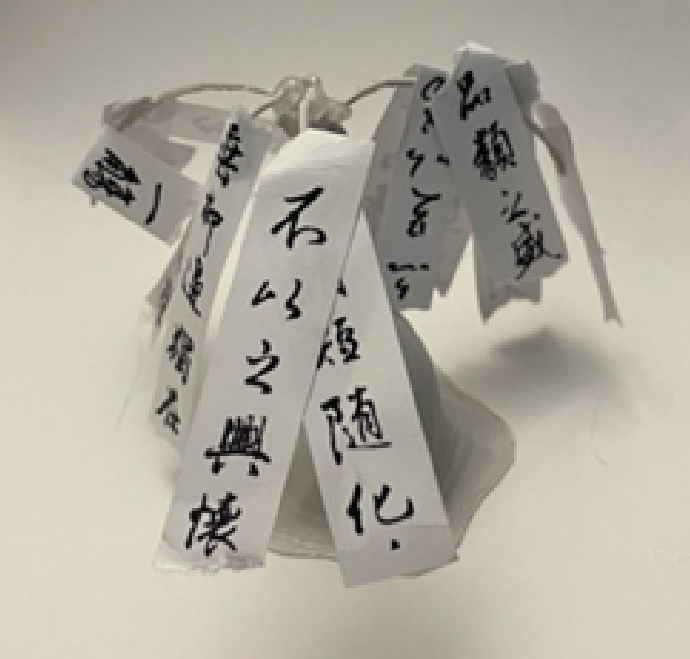
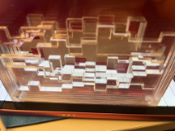

Wish Willow
A kinetic sculpture study exploring how engineered materials can carry an organic, living feeling. Inspired by willow trees swaying in the wind and the cultural tradition of wish trees in northern China, the piece uses a manufactured tree form with an internal joint-and-tendon structure.

The Train
A real-time generative animation that runs across four synchronized screens using MPI multi-process architecture. Minimalist trains move across the monitors, emitting colorful smoke particles that linger and accumulate over time.

Waves of Love
A computational fabrication project that translates sound waves into a layered, physical object. Using Ableton Live and Blender, specific audio frequencies from a personal recording were isolated to drive the generation of discrete geometric layers.